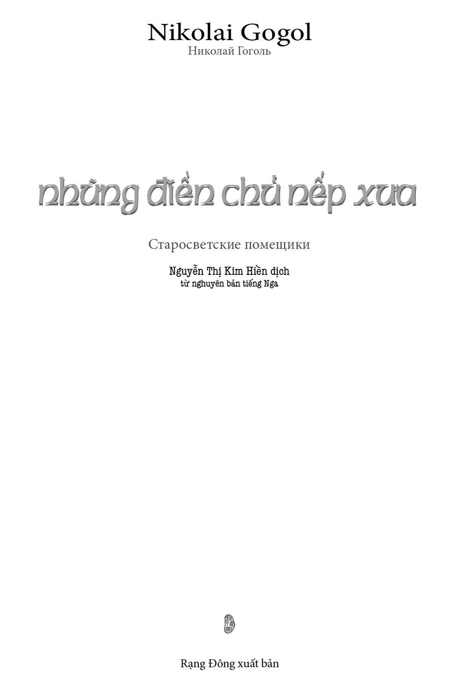
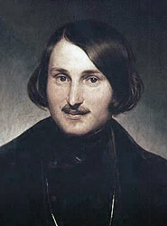
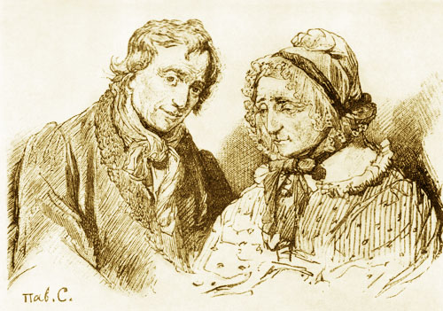
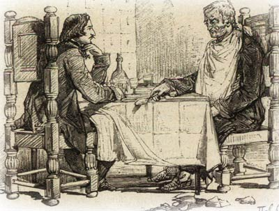

Nikolai Gogol
◇ ❖ ◇
Tôi rất yêu cuộc sống giản dị của những chủ nhân các làng quê xa xôi mà ở Tiểu Nga người ta thường gọi là điền chủ nếp xưa, những người hệt như những ngôi nhà hữu tình già nua cũ kỹ, đáng yêu bởi vẻ tạp sắc loang lổ, hoàn toàn đối lập với kiểu nhà tân thời phẳng phiu nhẵn nhụi, khi mà tường nhà còn chưa bị nước mưa xói tẩy, mái chưa hề phủ rêu xanh và thềm nhà còn chưa bị tróc vữa để phô ra những viên gạch đỏ. Thi thoảng tôi vẫn thích được lạc vào nơi ấy, dù chỉ phút giây thôi, vào cái môi trường cuộc sống biệt lập lạ thường ấy, nơi không một ước muốn nào có thể vượt qua dãy bờ giậu quanh khoảng sân nhỏ, ra khỏi hàng rào của ngôi vườn đầy những cây táo cây mận, vượt khỏi những ngôi nhà gỗ quê mùa lung lay xiêu vẹo xung quanh khu vườn, được những cây liễu, cây cơm cháy và cây lê nghiêng bóng che chở. Cuộc sống của các vị chủ nhân khiêm nhường ấy bình lặng quá, êm ả quá, đến nỗi trong phút chốc dường như bạn bỗng quên lãng đi và bạn nghĩ rằng hoàn toàn không hề tồn tại những niềm say mê, những ước vọng và những sản phẩm bất an của hung thần vốn thường làm nhiễu loạn trần thế, chẳng qua là bạn chỉ thấy tất cả những thứ đó trong những cơn mơ sáng chói và lấp lánh mà thôi. Từ nơi đây tôi thấy ngôi nhà nho nhỏ thâm u có hàng hiên với những cột gỗ nhỏ đen xỉn bao quanh toàn bộ nhà, để mỗi khi sấm sét và mưa đá thì có thể ra đóng cửa chớp mà không bị ướt. Đằng sau nhà có cây dã anh thơm ngát, những hàng cây ăn quả thấp lè tè, lúc lỉu quả anh đào đỏ thắm với cả một biển những trái mận màu hồng ngọc mờ phấn xám, cây phong lòa xòa, dưới gốc có trải tấm thảm để ngồi hóng mát; trước nhà là chiếc sân rộng thênh thang với lớp cỏ tươi xén ngắn, một lối mòn dẫn từ vựa lúa mì đến bếp và từ bếp đến phòng ngủ của các vị chủ nhân; con ngỗng cổ dài đang uống nước với bầy ngỗng con lông mịn như tơ; hàng dậu treo đầy những xâu táo xâu lê phơi khô và những tấm thảm đang hong gió; chiếc xe ngựa chở đầy dưa bở bên cạnh vựa lúa mì, con bò thiến được cởi dây buộc đang lười biếng nằm bên cạnh – đối với tôi, tất cả những cái đó có một vẻ gì đó tuyệt mỹ không sao cắt nghĩa được, có thể do tôi chẳng thể nào gặp lại chúng nữa, hoặc cũng có thể đối với chúng ta tất cả những gì đã xa cách thì đều đáng mến đáng yêu. Trong mọi trường hợp, ngay cả thưở ấy, khi chiếc xe ngựa của tôi gần đến bậc thềm của ngôi nhà nhỏ đó, tâm hồn tôi bỗng dâng trào một trạng thái dễ chịu và yên tĩnh lạ thường; những con ngựa vui vẻ chạy tới trước thềm nhà, người xà ích rất bình thản nhảy từ trên ghế xuống và rất bình thản nhồi thuốc vào tẩu, như thể bác ta vừa về đến nhà mình, ngay cả tiếng sủa mà mấy con chó barbos, brovka và zhuchka 1 lãnh đạm cất lên cũng khiến tôi thấy vui tai.
⚝ ❖ ⚝
Nhưng hơn tất thảy những cái đó, tôi thích nhất các vị chủ nhân của góc nhỏ giản dị ấy, những ông lão, bà lão ân cần, vồn vã bước ra chào đón khách. Cho đến tận bây giờ, đôi khi tôi vẫn hình dung ra họ trong tiếng ồn ào giữa đám đông những người mặc áo đuôi tôm theo mốt, và những lúc đó tôi lại như thấy mình dường như đang trong giấc mơ dở dang về một thời quá khứ đã qua. Trên gương mặt những ông bà già đó lúc nào cũng thể hiện lòng nhân từ, sự vồn vã chân thành đến nỗi dù chỉ trong một khoảng thời gian ngắn ngủi, bạn vô tình từ bỏ những mơ ước táo bạo của mình và dần dần toàn tâm toàn ý chuyển sang một cuộc sống yên bình phẳng lặng. Đến tận thời điểm này tôi vẫn không thể nào quên được đôi vợ chồng già thế kỉ trước, những người mà than ôi, nay đã không còn nữa, nhưng cho đến bây giờ tâm hồn tôi vẫn tràn đầy thương cảm, và tôi thấy lòng mình thắt lại một cách lạ thường mỗi khi hình dung rằng đến một lúc nào đó mình lại đến khu tư thất xưa của họ mà nay đã thành hoang vắng, và sẽ thấy hàng loạt nhà cửa đổ nát, mảnh ao đã bồi lấp, đoạn hào bị cây cỏ trùm khuất tại cái nơi xưa kia từng có một ngôi nhà xinh mái thấp của họ - và ngoài ra chẳng còn gì khác nữa. Chao ôi là buồn! Chưa chi tôi đã thấy trước là buồn quá mất rồi! Nhưng thôi chúng ta hẵng quay lại câu chuyện.
⚝ ❖ ⚝
Afanasi Ivanovich Tovstogub và bà vợ của ông tên là Pulkheria Ivanovna Tovstogubikha, theo cách gọi của cánh mugic trong vùng, chính là những người già mà tôi đã bắt đầu nói đến ở trên. Giá như tôi là một họa sĩ và muốn mô tả Filemon và Bavkida 2 trên tranh, hẳn là tôi chẳng bao giờ chọn được nguyên mẫu nào khác ngoài họ. Afanasi Ivanovich khoảng sáu mươi, còn Pulkheria Ivanovna thì chừng năm mươi lăm tuổi. Afanasi Ivanovich có dáng người lỏng khỏng, lúc nào cũng mặc chiếc áo khoác bằng lông cừu có lượt bọc ngoài bằng vải len dày, thường ngồi gù lưng và hầu như lúc nào cũng mỉm cười, cho dù ông đang kể chuyện hoặc đơn giản là chỉ ngồi nghe. Còn Pulkheria Ivanovna thì hơi nghiêm, hầu như không bao giờ cười, nhưng trên mặt bà ghi dấu biết bao từ tâm, bao lòng sẵn sàng thết đãi bạn tất cả những gì ngon nhất có trong nhà, đến nỗi bạn sẽ thấy rằng nụ cười là quá thừa trên gương mặt hiền hậu của bà. Những nếp nhăn trên mặt họ được phân bố một cách dễ chịu đến nỗi chắc là họa sĩ nào cũng muốn lấy trộm những đường nét ấy. Dường như qua những nếp nhăn đó người ta có thể đọc được tất cả về cuộc đời trong sáng, bình thản của họ, những người thuộc dòng họ quý tộc cổ xưa, vừa chất phác mà đồng thời lại giàu sang, thường xuyên trái ngược với những kẻ Tiểu Nga thấp hèn, nảy nòi ra từ những gã nấu hắc ín, những gã con buôn, nhung nhúc trong những văn phòng hoặc công sở, thường lột tận đồng xu cuối cùng của đồng tộc, khiến cho Saint-Peterburg tràn ngập loại hớt lẻo, tâu báo, rốt cuộc tạo được vốn liếng để rồi đắc thắng thêm vào cái họ kết thúc bằng chữ “o” của mình một vĩ tố “v” 3 . Không đâu, y như tất cả những dòng họ Tiểu Nga có cội rễ lâu đời, hai ông bà lão này hoàn toàn không giống những kẻ đáng khinh thường và đáng thương hại đó.
⚝ ❖ ⚝
Khó có thể cầm lòng nổi khi chứng kiến cảnh hai ông bà lão quyến luyến nhau mà không nảy sinh thiện cảm. Họ không bao giờ mình mình tôi tôi, mà bao giờ cũng gọi nhau trang trọng đầy đủ tên và phụ danh là “ông Afanasi Ivanovich”, “bà Pulkheria Ivanovna”. “Ông Afanasi Ivanovich ơi, có phải ông vừa đánh đổ chiếc ghế không đấy?” - “Không sao đâu, bà Pulkheria Ivanovna ạ, đừng giận tôi nhé, đúng là tôi đấy.” Bởi chưa bao giờ có con cái nên họ dồn tất cả mọi tình trìu mến cho nhau. Một thời, Afanasi Ivanovich từng phục vụ trong kỵ binh tình nguyện, sau đó được giữ chức vụ chuẩn tá, nhưng đó là chuyện xưa lắm rồi, đã trôi qua lâu đến nỗi chính bản thân Afanasi Ivanovich hầu như cũng không còn nhớ nữa.
⚝ ❖ ⚝
Afanasi Ivanovich cưới vợ hồi ba mươi tuổi, khi còn trẻ trai và mặc áo kamzon 4 thêu, thậm chí ông đã khéo léo chở lén được Pulkheria Ivanovna khỏi nhà nàng, bởi người thân của nàng không muốn gả cho ông, nhưng bây giờ ông ít khi nhớ về chuyện đó, hoặc chí ít cũng không bao giờ nhắc đến nữa.
Tất cả những biến cố xa xưa và phi thường ấy đã được thay thế bằng một cuộc sống bình lặng, biệt lập, bằng những ảo mộng mơ màng và đồng thời có phần êm ái mà bạn thường cảm thấy mỗi khi ngồi trong ngôi nhà ở làng quê, từ trên ban công nhìn ra vườn, khi cơn mưa tuyệt vời đang rơi trên lá cây và rì rào một cách xa xỉ, róc rách thành những dòng suối nhỏ, ru toàn bộ thân thể ta vào cơn ngái ngủ, trong khi đó chiếc cầu vồng đã vượt lên mé trên ngọn cây thành một vòm tròn đứt gãy và chiếu sáng bầu trời bằng bảy sắc màu mờ đục. Hoặc là khi cỗ xe ngựa đang lắc lư ru bạn khi nó lặn ngụp giữa những bụi cây xanh, trong lúc con chim cun cút thảo nguyên đang kêu váng cả tai, còn cỏ thơm cùng những bông lúa mì và hoa dại thì chui cả vào cửa xe, quệt vào tay vào mặt bạn một cách dễ chịu.
Afanasi Ivanovich thường lắng nghe các vị khách đến thăm nhà với nụ cười dễ chịu, thỉnh thoảng ông cũng góp chuyện, nhưng thông thường ông thích hỏi han người khác nhiều hơn. Ông cũng không thuộc số những ông già thường khiến cho người khác chán ngấy bằng những câu muôn thưở ca ngợi tháng ngày quá vãng hay là bài bác chỉ trích thời đại mới. Trái lại, ông hay hỏi han, thể hiện sự tò mò hiếu kì và hỏi thăm về cuộc sống riêng của bạn, như các ông già hiền hậu thường hay quan tâm, cho dù sự hiếu kì đó phần nào giống tính tò mò của một đứa trẻ ngắm nghía cái triện 5 đeo ở dây đồng hồ của bạn. Những lúc ấy, gương mặt ông nom thật nhân từ.
Các phòng trong ngôi nhà mà hai cụ già của chúng ta đã sống đều nhỏ và thấp như thường thấy ở nhà những người Tiểu Nga nếp xưa. Trong mỗi phòng đều có một lò sưởi đồ sộ chiếm đến một phần ba diện tích. Những căn phòng đó ấm kinh khủng, vì Afanasi Ivanovich và Pulkheria Ivanovna đều rất thích sưởi ấm. Các lò sưởi của nhà họ đều thông với lò đốt ở phòng ngoài, nơi lúc nào cũng chất đầy đến nóc rơm khô mà ở Tiểu Nga người ta dùng thay củi. Vào những buổi tối mùa đông, mỗi khi đám thanh niên sôi nổi chạy vào phòng ngoài, đập tay vì bị rét cóng sau cuộc theo đuổi một cô má bồ quân nào đó, tiếng rơm đang cháy nổ lách tách trong bếp lò sao mà ấm áp dễ chịu. Tường nhà có treo các bức tranh to nhỏ viền những chiếc khung hẹp kiểu cổ. Tôi tin rằng các vị chủ nhân đã quên sự có mặt của những bức tranh ấy từ lâu, và nếu có mấy bức bị đưa đi mất thì chắc họ cũng chẳng nhận ra. Có hai bức chân dung to bằng sơn dầu, một bức vẽ vị giám mục nào đó, trên bức kia là Pie Đệ Tam 6 . Từ chiếc khung ảnh hẹp nữ công tước Lavalière 7 bị ruồi bu bẩn đang ngó xuống. Xung quanh cửa sổ và trên các cửa ra vào treo vô số những bức tranh nhỏ mà bạn cứ quen coi là những vết đen trên tường nên hoàn toàn không để ý đến nữa. Sàn ở hầu hết các phòng đều bằng đất sét nện, nhưng được lau chùi sạch sẽ và giữ gìn tươm tất đến nỗi không một loại sàn gỗ nhà giàu nào thường được một quý ngài mặc bộ đồng phục hầu phòng ngái ngủ nào đó quét dọn có thể sánh bằng.
⚝ ❖ ⚝
Phòng của bà Pulkheria Ivanovna chất đầy những hòm to rương nhỏ. Vô thiên lủng những túi, những đãy, những bao tải đựng hạt hướng dương, hạt hoa, hạt rau và hạt dưa treo đầy trên tường. Vô số cuộn len, mảnh vải từ những váy áo cổ đủ màu, may từ nửa thế kỉ trước xếp trên các góc rương và giữa các hòm nhỏ. Pulkheria Ivanovna là một bà nội trợ vĩ đại, bà thu vén lượm lặt đủ thứ, mặc dù đôi lúc chính bản thân bà cũng chẳng biết sau này sẽ dùng những thứ đó vào việc gì.
⚝ ❖ ⚝
Nhưng điều tuyệt vời nhất trong nhà là những cánh cửa biết hát. Trời vừa mới sáng, giọng ca của những cánh cửa đã truyền vang khắp cả ngôi nhà. Tôi không thể nói được vì sao những cánh cửa ấy lại kêu lên như vậy, do bản lề rỉ hay là do người thợ làm cửa đã giấu một bí mật nào đó bên trong, - nhưng điều thú vị nhất là mỗi một cánh cửa đều có giọng điệu riêng: cửa dẫn vào buồng ngủ thì hát lên bằng giọng kim cao vút, cửa tới phòng ăn thì khàn khàn giọng nam trầm, cửa dẫn vào phòng ngoài phát ra tiếng kêu lạ lùng run rẩy đồng thời nghe như tiếng rên, nếu lắng tai thì có thể nghe thấy rõ ràng “Trời ơi, tôi chết cóng mất!”. Tôi biết nhiều người không thích âm thanh đó, nhưng bản thân tôi thì lại rất mê, và nếu như thỉnh thoảng tôi có dịp nghe tiếng kẹt cửa, thì lập tức tôi lại cảm thấy mùi vị làng quê, thấy căn phòng trần thấp được chiếu sáng bằng cây nến cắm trong chiếc đế cổ, bữa ăn tối đã dọn trên bàn, đêm tháng năm tối đen như mực đang lan qua ô cửa sổ mở rộng từ khu vườn tràn vào phòng có chiếc bàn bày đầy những bộ đồ ăn, tiếng chim họa mi bao trùm lên khắp khu vườn, khắp ngôi nhà và cả dòng sông xa xa bằng giọng rền vang và nỗi thảng thốt của nó, bằng tiếng xào xạc của cành cây… và lạy Chúa, chuỗi hoài niệm trong tôi khi đó cứ nối dài bất tận!
Ghế ngồi trong phòng đều làm bằng gỗ, đồ sộ như thường thấy ở thời cổ, chiếc nào cũng có lưng cao chạm trổ, để mộc tự nhiên không sơn hoặc đánh véc ni, thậm chí không bọc vải và có phần giống những chiếc ngai mà ngày nay các vị giáo chủ vẫn ngự. Những chiếc bàn tam giác trong các góc nhà và những chiếc bàn hình chữ nhật trước đi văng, trước chiếc gương trong khung vàng chạm trổ những chiếc lá mỏng mảnh bị bầy ruồi gieo rắc đầy những chấm đen, tấm thảm trước đi văng với những con chim giống như những bông hoa và những bông hoa giống những con chim – đó là tất cả những đồ đạc trang hoàng trong ngôi nhà mộc mạc mà hai ông bà lão của tôi cư ngụ.
Phòng dành cho hầu gái toàn các cô gái trẻ hoặc không còn trẻ mặc những chiếc áo lót mình kẻ sọc, thỉnh thoảng được Pulkheria Ivanovna sai may vài thứ đồ trang sức nhỏ và bắt nhặt chọn quả rừng, nhưng phần nhiều là các cô nàng chạy xuống bếp và nằm ngủ. Pulkheria Ivanovna cho rằng cần phải nuôi các cô hầu này trong nhà và nghiêm khắc coi sóc phần đức hạnh của họ. Và bà ngạc nhiên biết bao khi thỉnh thoảng eo lưng một vài cô lại đẫy ra hơn mức bình thường, mà điều phi lý hơn nữa là trong nhà hầu như chẳng có gã trai trẻ nào chưa vợ, ngoại trừ thằng bé hầu buồng mặc chiếc áo đuôi tôm lửng màu xám, chân đi đất, nếu không ăn thì chỉ có ngủ. Thông thường Pulkheria Ivanovna mắng mỏ và trừng phạt cô gái mắc lỗi một cách nghiêm khắc để lần sau đừng có hư thân nữa.
⚝ ❖ ⚝
Trên lần kính cửa sổ thường có tiếng vo ve một cách khủng khiếp của hằng hà sa số ruồi, thế mà vẫn không át nổi giọng trầm của những con ong đất béo quay, thỉnh thoảng đệm thêm tiếng kêu chói tai của nhặng, nhưng đến khi nến vừa được thắp lên thì tất cả bầu đoàn thê tử ấy liền kéo nhau đi ngủ và phủ kín trần nhà như một đám mây đen kịt.
Afanasi Ivanovich ít khi coi sóc công việc, mặc dầu thỉnh thoảng ông cũng ra thăm đám thợ cày, thợ gặt và chăm chú xem họ làm việc, nhưng tất cả gánh nặng quản lý đều đổ lên đôi vai Pulkheria Ivanovna. Việc nội trợ của Pulkheria Ivanovna là liên tục đóng và mở gian buồng kho, thường xuyên muối, phơi hoặc làm mứt từ các loại rau dưa và hoa quả. Ngôi nhà của bà giống y như một phòng thí nghiệm hóa học. Dưới gốc cây táo thường xuyên có một bếp lửa, hầu như chiếc chảo hoặc chậu đồng không bao giờ được nhắc xuống khỏi kiềng sắt mà luôn nấu mứt, thạch, kẹo với mật ong, đường và tôi cũng không sao nhớ hết là nấu với những thứ gì nữa. Dưới một gốc cây khác người xà ích thường xuyên nấu rượu ngâm lá đào, hoa dã anh, cỏ kim anh, hạt anh đào trong cái nồi bằng đồng, và đến cuối công đoạn ấy thì gã hoàn toàn không điều khiển nổi cái lưỡi nữa mà liên thuyên những điều nhảm nhí khiến Pulkheria Ivanovna chẳng hiểu gì cả, và thế là gã liền bỏ vào bếp đi ngủ. Bởi Pulkheria Ivanovna thường thích dự trữ mọi thứ nhiều hơn mức có thể sử dụng, nên tất cả đám linh tinh ấy được ninh nấu, được muối, được phơi nhiều đến mức chắc là sẽ tràn ngập cả sân, chìm cả nhà, nếu hơn một nửa thứ của ấy không bị bọn hầu gái chui vào nhà kho ăn vụng, chúng ăn nhiều đến nỗi suốt ngày rên rẩm kêu đau bụng.
Ngoài sân nhà, Pulkheria Ivanovna ít có điều kiện trong nom việc trồng lúa mì và các việc khác. Viên quản lý thông đồng với trưởng thôn xà xẻo một cách trắng trợn. Chúng thường có thói quen vào rừng của ông bà chủ như vào nhà mình, làm ra vô số xe trượt và bán tại hội chợ gần đó, hoặc đốn những cây sồi cổ thụ thành gỗ súc bán cho những người cô dắc láng giềng để họ mang về làm cối xay. Chỉ có một lần duy nhất Pulkheria Ivanovna muốn đi khảo quanh các cánh rừng của mình. Bà sai thắng chiếc xe ngựa không mui có tấm chắn 8 to tướng bằng da mà nếu viên xà ích rung dây cương và những con ngựa trước đây từng phục vụ trong đội dân binh chồm lên thì trong không gian bỗng tràn ngập thứ âm thanh lạ lùng, nghe như có tiếng sáo, tiếng lục lạc và tiếng trống, mỗi cái đinh, mỗi cái vòng đều ngân lên, vang xa đến nỗi tận mãi cối xay cũng nghe thấy là bà chủ đang rời nhà, tuy khoảng cách cũng không dưới hai dặm 9 Pulkheria Ivanovna không thể không nhận thấy cánh rừng thưa hẳn đi một cách khủng khiếp và không còn những cây sồi mà từ khi bà còn nhỏ cũng đã trăm tuổi.
- Này anh Nichipor, tại sao sồi lại thưa ra thế này hả? Coi chừng tóc trên đầu anh cũng sẽ thưa đi đấy nhé. - bà nói với người quản lý đang đứng ngay bên cạnh.
- Tại sao chúng thưa đi ấy ạ? – Người quản lý nói giọng cứ như không – Tại vì chúng chết nhiều lắm ạ. Chết hết, cây thì bị sét đánh, cây thì bị sâu đục, chết hết rồi bà chủ ạ.
Pulkheria Ivanovna hoàn toàn bằng lòng với câu trả lời như vậy, và khi về nhà bà chỉ sai tăng gấp đôi số người gác vườn, cạnh những cây anh đào Tây Ban Nha và những cây lê cao lớn quả chín để dành đến tận mùa đông. Những người cai quản cừ khôi ấy, tức là tên quản lý và trưởng thôn cho là quá thừa nếu đưa hết tất cả bột mì về kho của chủ, vì ông bà chủ thì một nửa cũng đủ rồi, mà rốt cuộc trong số một nửa lượng bột ấy chúng cũng chỉ đưa về nộp chỗ bị mốc hay bị ướt, có đem đi bán ở hội chợ thì cũng bị coi là phế phẩm. Nhưng cho dù bọn quản lý có ăn cắp bao nhiêu đi nữa, cho dù tất cả kẻ ăn người ở trong nhà, từ mụ quản gia cho đến bầy lợn trong sân, có ngốn một lượng khủng khiếp táo, mận nhiều đến đâu chăng nữa, mà bọn lợn thì vừa ăn lại vừa lấy mõm huých vào thân cây để cho quả rụng xuống như mưa, cho dù quạ và sẻ có mổ mất bao nhiêu, cho dù người làm công có ăn cắp bao nhiêu để mang tới các làng khác biếu khắp các ông bố bà mẹ đỡ đầu của họ, thậm chí tha cả vải vóc và len sợi từ các nhà kho đem đến nguồn nước sống của toàn thế giới tức là quán rượu, cho dù khách khứa, lũ xà ích lạnh lùng và hầu buồng tỉnh bơ có ăn cắp bao nhiêu đi chăng nữa, nhưng sản vật mà đất đai màu mỡ cấp cho vẫn nhiều vô kể, trong khi nhu cầu của Afanasi Ivanovich и Pulkheria Ivanovna lại chẳng đáng là bao nên sự thất thoát ấy hầu như không nhận thấy trong gia sản của họ.
Theo lệ thường của những điền chủ nếp xưa, cả hai ông bà vốn rất thích ăn uống. Trời vừa mới hửng sáng (họ thường dậy rất sớm), khi những cánh cửa vừa cất lên bản nhạc đa âm thì họ đã ngồi vào bàn uống cà phê. Uống cà phê chán chê, Afanasi Ivanovich bước ra thềm, giũ giũ chiếc khăn và quát: “Kis, kis, lũ ngỗng kia, biến khỏi thềm ngay!”. Ra đến sân, thông thường ông gặp ngay viên quản lý. Theo lệ ông nói chuyện với gã đôi câu, hỏi han công việc một cách vô cùng tỉ mỉ, đưa ra các nhận xét và những điều sai bảo có thể khiến cho người ta ngạc nhiên về sự thông thái am hiểu công việc của chủ nhân, đến nỗi người mới vào làm chắc không thể nào dám cả gan sinh lòng ăn bớt ăn xén của một ông chủ tinh mắt đến thế. Nhưng viên quản lý của ông đã là con chim không còn sợ cành cong, gã biết cách đối đáp, và hơn thế, biết cách cai quản công việc. Một lúc sau, Afanasi Ivanovich quay vào buồng, đến gần Pulkheria Ivanovna và nói:
- Này bà Pulkheria Ivanovna ơi, có khi ta đã đến lúc phải ăn một chút gì rồi đấy nhỉ?
- Biết ăn gì bây giờ hả ông Afanasi Ivanovich? Có chăng thì là bánh korzhik với mỡ lợn muối, hoặc bánh nướng với hạt anh túc, hay với nấm ryzhik muối?
- Chắc là bánh nướng và nấm ryzhik bà ạ, - ông Afanasi Ivanovich đáp, và thế là chiếc khăn trải bàn với bánh và nấm tức thì xuất hiện.
Khoảng một tiếng đồng hồ trước bữa trưa Afanasi Ivanovich lại nhấm nháp chút gì đó, uống vodka trong chiếc chung bạc cổ, nhắm với nấm, các loại cá khô... Họ ngồi vào bàn ăn trưa lúc mười hai giờ. Ngoài bát đĩa và đồ ăn, trên bàn còn có có vô số liễn sành đậy kín nắp để mùi thơm của những món ẩm thực cổ không bị bay hơi mất. Bên bàn ăn câu chuyện thông thường chỉ nói về những gì gần gũi nhất với bữa ăn:
- Tôi thấy hình như món cháo này hơi bị khét một chút, bà có thấy thế không hở Pulkheria Ivanovna? – Afanasi Ivanovich thường hỏi.
⚝ ❖ ⚝
- Không đâu, Afanasi Ivanovich ạ, ông bỏ thêm nhiều bơ thì không thấy khét đâu, hay là lấy nước sốt nấm mà rưới này. - Pulkheria Ivanovna đáp
- Có khi thế thật, - Afanasi Ivanovich nói và chìa đĩa của mình, - để tôi ăn thử xem thế nào.
⚝ ❖ ⚝
Ăn trưa xong Afanasi Ivanovich ngả lưng khoảng một giờ, sau đó |Pulkheria Ivanovna mang quả dưa hấu đã bổ ra và nói:
- Ông Afanasi Ivanovich ơi, nếm thử xem quả dưa ngon không.
- Bà Pulkheria Ivanovna này, ruột nó đỏ quá nhỉ, - Afanasi Ivanovich với một miếng khá to vừa nói: - Mà bà có tin không chứ, đôi khi ruột đỏ mà lại chẳng ra gì đâu.
Thế nhưng quả dưa hấu lập tức biến mất. Sau đó ông ăn thêm mấy quả lê và ra vườn dạo chơi với Pulkheria Ivanovna. Khi về nhà, Pulkheria Ivanovna đi lo những công việc nội trợ của mình, còn ông thì ngồi ở hiên nhà nhìn ra vườn, nơi cửa kho mở ra rồi lại đóng vào liên tục, hết khoe lòng ruột bên trong rồi lại giấu đi, bọn con gái chen đẩy nhau khiêng vào khiêng ra đủ thứ đựng trong những chiếc thùng gỗ, trên mẹt và các thứ dụng cụ cất giữ hoa quả khác. Được một chốc ông lại sai gọi Pulkheria Ivanovna hoặc thân chinh đi tìm bà:
- Có cái gì ăn được không, bà Pulkheria Ivanovna?
- Biết cho ông ăn gì bây giờ? - Pulkheria Ivanovna đáp. – Hay để tôi bảo mang mằn thắn nhân hoa quả mà tôi dặn cất phần cho ông nhé?
- Nếu thế thì tốt, - Afanasi Ivanovich đáp.
- Hay là ông ăn chút chè bột quả được không?
- Thế cũng được, - Afanasi Ivanovich trả lời. Sau đó các thứ được mang ra và lại hết sạch như thường lệ. Trước bữa tối Afanasi Ivanovich còn ăn thêm vài thứ nữa. Đến chín giờ rưỡi họ ngồi vào bàn ăn tối. Ăn xong là đi ngủ luôn, và bóng tốt tràn vào ngôi nhà nhộn nhịp mà cũng yên tĩnh đó. Phòng ngủ của Afanasi Ivanovich và Pulkheria Ivanovna nóng đến nỗi hiếm ai có thể ở đó được liền mấy giờ đồng hồ. Thế mà Afanasi Ivanovich lại còn ngủ trên nệm lông cho ấm thêm, mặc dù đêm đến nóng quá nên ông phải thức dậy loanh quanh trong phòng đến mấy lần.
⚝ ❖ ⚝
Đôi khi đang đi đi lại lại như thế thì Afanasi Ivanovich cất tiếng rên, khiến Pulkheria Ivanovna lập tức hỏi:
- Làm sao mà rên thế hả Afanasi Ivanovich?
- Có trời mà biết được, Pulkheria Ivanovna ạ, không hiểu sao tôi lại thấy bụng cứ đau đau làm sao ấy, - Afanasi Ivanovich đáp.
- Hay là ông ăn một chút gì xem có đỡ không hả Afanasi Ivanovich?
- Không biết thế có tốt hơn không, Pulkheria Ivanovna ạ! Mà biết ăn gì bây giờ hả bà?
- Sữa chua hoặc nước quả đặc với lê khô nhé.
- Nếu chỉ thế thôi thì chắc là được, bà cho tôi nếm xem, - Afanasi Ivanovich nói.
Cô hầu ngái ngủ được sai đi lục lọi trong các chạn, Afanasi Ivanovich ăn hết cả một đĩa, sau đó ông thường nói:
⚝ ❖ ⚝
- Hình như bây giờ nghe có vẻ dễ chịu hơn rồi thì phải.
⚝ ❖ ⚝
Đôi lúc, khi trời còn sáng sủa và trong phòng đốt lò sưởi ấm áp, Afanasi Ivanovich thấy vui vẻ nên thích trêu đùa Pulkheria Ivanovna và nói về chuyện gì đó ngoài lề.
- Này bà Pulkheria Ivanovna, - ông nói, - nếu nhà này mà cháy thì chúng ta đi đâu được nhỉ?
- Lạy Chúa phù hộ! - Pulkheria Ivanovna làm dấu và kêu lên.
- Thì cứ cho là nhà ta bị cháy, lúc ấy ta chuyển đi đâu nào?
- Trời mới biết được ông nói cái gì vậy, ông Afanasi Ivanovich ạ! Làm sao mà nhà ta lại cháy được, Chúa không bao giờ để cho chuyện đó xảy ra đâu.
- Chà, thì cứ giả sử nó bị cháy thì sao?
- Thì ta chuyển xuống bếp vậy. Khi đó ông cứ chọn cái phòng mà mụ quản gia đang ở ấy.
- Nếu bếp cũng bị cháy thì sao?
- Đời nào lại thế! Chúa không bao giờ cho phép để cháy một lúc cả nhà lẫn bếp đâu! Chà, nếu thế thì chuyển tạm xuống phòng kho khi chưa xây được nhà mới ông ạ.
- Thế giả sử nhà kho cũng cháy nốt thì sao?
- Ông nói gì thế! Thôi tôi không nghe ông nói nữa đâu! Nói thế là có tội đấy, Chúa sẽ trừng phạt cho mà xem.
Nhưng Afanasi Ivanovich lấy làm bằng lòng vì đã trêu chọc Pulkheria Ivanovna nên cứ ngồi trên chiếc ghế của mình mà mỉm cười.
Nhưng đối với tôi, hai ông bà lão có vẻ thú vị nhất khi khách khứa đến thăm. Những lúc như vậy ngôi nhà mang diện mạo khác hẳn. Có thể nói rằng những con người nhân từ này sống vì các vị khách. Tất cả những gì ngon lành nhất trong nhà đều được mang ra hết. Họ liên tục cố gắng thết đãi bạn tất cả những gì mà nhà họ làm ra. Nhưng điều khiến cho tôi cảm thấy dễ chịu nhất là sự hiếu khách của họ không hề có một chút gì đãi bôi. Thái độ ân cần và sẵn sàng ấy biểu thị một cách hiền lành trên vẻ mặt hai ông bà, thích hợp với họ đến nỗi bạn bắt buộc nghe theo lời mời mọc của họ. Sự ân cần đó chính là kết quả từ sự giản dị thuần khiết và minh bạch của những tâm hồn nhân từ, không chút giảo quyệt. Hoàn toàn không phải là thái độ niềm nở của một vị viên chức nhà nước nào đó, thành danh nhờ công bảo trợ của bạn, gọi bạn là ân nhân và bò lê dưới chân bạn. Không đời nào hai ông bà lại để cho khách ra về ngay, mà nhất thiết phải giữ ngủ lại.
- Muộn thế này rồi đường sá xa xôi như thế làm sao mà về! - Pulkheria Ivanovna thường bảo thế (mà khách thường chỉ cách nhà họ ba đến bốn dặm là cùng).
- Dĩ nhiên rồi, - Afanasi Ivanovich nói, - thiếu gì chuyện có thể xảy ra, nhỡ gặp phải bọn đầu trộm đuôi cướp hoặc một kẻ xấu bụng nào đó thì sao.
– Cầu Chúa phù hộ cho không bao giờ gặp phải bọn cướp! - Pulkheria Ivanovna nói, - Đêm khuya rồi ai lại đi nói gở như thế! Chẳng có cướp thì trời cũng khuya rồi, không về được đâu. Với lại tôi còn lạ gì gã xà ích nhà bên ấy, hắn đã yếu ớt lại bé người, con ngựa cái nào cũng làm hắn ngã lăn kềnh ra, mà giờ này chắc hắn đã say nhè và gà gật ở xó nào rồi.

⚝ ❖ ⚝
Và thế là khách nhất thiết phải ngủ lại, thế nhưng một buổi tối trong căn nhà trần thấp ấm áp, câu chuyện vui vẻ như sưởi ấm và ru ngủ, làn hơi bốc lên từ những món ăn trên bàn, lúc nào cũng được nấu nướng kĩ càng và khéo léo đúng là phần thưởng dành cho khách. Đến nay tôi vẫn hình dung được rất rõ hình ảnh Afanasi Ivanovich ngồi lom khom trên ghế với nụ cười muôn thưở và khoan khoái lắng nghe người khách nói chuyện. Thông thường câu chuyện đề cập đến cả chính trị. Vị khách cũng là người hiếm khi ra khỏi làng, với vẻ mặt quan trọng và bí ẩn, thường hay dẫn dắt những điều phỏng đoán của mình và kể rằng người Pháp đã bí mật thỏa thuận với bọn người Anh thả Bô-na-pác-tờ để đánh Nga lần nữa, hoặc đơn thuần kể về cuộc chiến tranh sắp tới. Những khi đó Afanasi Ivanovich thường làm ra vẻ như không nhìn về phía bà Pulkheria Ivanovna và nói:
- Tôi cũng đang nghĩ xem có nên ra trận không đây, tại sao tôi lại không thể ra trận nhỉ?
- Đi được ngay bây giờ đấy! - Pulkheria Ivanovna ngắt lời. – Ông đừng có mà nghe ông ấy nhé, - bà hướng về phía khách và nói. – Già lão thế rồi còn đi đâu nữa! Tên lính đầu tiên sẽ bắn trúng ông ấy ngay! Nói thật mà, trúng ngay đấy. Nó ngắm và bắn trúng liền!
- Đã sao, - Afanasi Ivanovich nói, - thì tôi cũng sẽ bắn trúng nó chứ.
- Ông đừng có nghe lời ông ấy! – Pulkheria Ivanovna nói tranh, - ông ấy thì ra trận thế nào được! Súng lục của ông ấy thì rỉ ra từ lâu rồi và đang nằm trong rương kia kìa. Giá mà ông nhìn thấy mấy khẩu súng ấy nhỉ: loại súng mà chưa kịp bắn thuốc nổ đã làm vỡ tung tóe ấy mà. Què tay, bỏng mặt, rồi còn khốn khổ suốt đời.
- Thì đã sao, - Afanasi Ivanovich nói, - Tôi sẽ sắm loại vũ khí mới chứ. Tôi sẽ chọn một thanh kiếm cong hoặc cây giáo kiểu cô dắc.
- Toàn chuyện bịa đặt cả, tự nhiên nghĩ ra rồi đi kể lung tung. - Pulkheria Ivanovna bực mình nói. - Tôi vẫn biết là ông ấy đùa, nhưng nghe khó chịu lắm. Ông ấy lúc nào cũng nói những chuyện như thế, nghe mãi, nghe mãi rồi thành ra sợ quá đi mất.
Afanasi Ivanovich lấy làm hài lòng vì đã dọa được Pulkheria Ivanovna, bật cười và ngồi gù lưng trên chiếc ghế của mình.
Đối với tôi, Pulkheria Ivanovna thường hấp dẫn nhất khi bà mời khách đến trước các món trên bàn:
- Đây là vodka ngâm với đan sâm, - bà nói và mở nắp bình. - Nếu ai bị đau bả vai hoặc đau ngang thắt lưng thì dùng thứ này tốt lắm. Còn đây rượu là ngâm với cỏ kim anh: nếu bị ù tai và nổi mụn trên mặt thì dùng thứ này. Còn rượu này thì cất từ hạt đào, ông nếm thử một chung mà xem, mùi thơm lắm. Nếu lúc ngủ dậy mà va phải tủ, phải bàn, đầu có bị u lên thì chỉ cần làm một chén nhỏ trước khi ăn cơm trưa, một chốc sau là hết ngay, như chưa bao giờ bị đau cả.
Sau sự liệt kê đó lại đến các bình khác, hầu hết đều có tác dụng chữa một thứ bệnh nào đó. Sau khi mời khách nếm một lượt tất cả các rượu thuốc ấy, bà dẫn họ đến trước vô thiên lủng các đĩa đựng thức ăn:
- Đây là nấm muối với hương húng! Còn đây là nấm muối với đinh hương và hạt dẻ! Một chị người Thổ dạy tôi muối đấy, từ hồi người Thổ còn làm nô tỳ ở ta. Chị người Thổ này hiền lành lắm, hoàn toàn không thể biết được là chị ta theo đạo khác. Cách cư xử cũng giống ta, có điều là không ăn thịt lợn, chị ấy bảo là luật của họ cấm đấy. Đây là nấm muối với lá phúc bồn tử và hạt dẻ! Còn đây là nấm cỏ: lần đầu tiên tôi ngâm với dấm, chẳng biết có ra gì không, tôi học theo bí quyết của cha Ivan. Trước hết phải lót lá sồi vào thùng gỗ nhỏ, sau đó rắc ớt và diêm tiêu lên, cho nấm vào, thêm hoa thì là già, hoa thì phải cho chúc xuống dưới còn cọng thì hướng lên trên. Còn đây là bánh nướng. Bánh này nướng với pho mát. Bánh này nướng với hạt gai ép! Còn đây là bánh mà Afanasi Ivanovich rất thích, nhân bắp cải và cháo kiều mạch.
- Vâng, - Afanasi Ivanovich nói thêm, - tôi thích ăn bánh này lắm, nó mềm và hơi chua chua.
⚝ ❖ ⚝
Tóm lại Pulkheria Ivanovna vui lòng vô cùng khi có khách tới thăm nhà. Một bà lão nhân từ xiết bao! Toàn bộ tâm trí và con người bà đều dành cho các vị khách. Tôi cũng thích đến chơi với hai ông bà, cho dù lần nào cũng bị ép ăn đến bội thực y như những vị khách khác, tuy biết thế là rất có hại, nhưng tôi bao giờ cũng rất vui mừng đến thăm họ.
⚝ ❖ ⚝
Với lại, tôi nghĩ chắc không khí ở Tiểu Nga có tính chất nào đó đặc biệt giúp người ta tiêu hóa tốt hơn chăng, bởi vì nếu ở đây có ai ăn nhiều đến mức như vậy thì chắc chắn thay vì nằm trong giường hẳn anh ta sẽ phải nằm trên bàn mất. Ông bà lão thật nhân từ! Song câu chuyện của tôi sắp đến sự kiện buồn thảm mất rồi, một sự kiện sẽ vĩnh viễn làm thay đổi cuộc sống ở cái góc nhỏ êm đềm đó. Sự kiện này càng lạ lùng hơn, vì nó xảy ra trong một trường hợp thật không có gì quan trọng. Nhưng theo sự sắp đặt kì lạ của tự nhiên, đôi khi những nguyên cớ nhỏ nhoi thường sinh ra những sự kiện vĩ đại, và ngược lại, những chủ trương to tát thì thường đem lại kết quả nhỏ mọn. Một kẻ xâm lăng nào đó tập hợp toàn bộ quân sĩ quốc gia, chinh chiến suốt mấy năm ròng, danh tiếng các vị thống lĩnh nổi lên như cồn, thế mà kết cục của tất cả những cái đó là chiếm được một dải đất bé tí, đến nỗi chẳng biết trồng khoai tây vào đâu, trong khi đó thì ngược lại, đôi khi mấy ông hàng giò ở hai thành phố cà khịa với nhau vì một lý do tầm bậy tầm bạ nào đó, thì cuộc đôi co ấy lại bao trùm thành thị, lan ra các làng mạc, rốt cuộc lây rộng hết cả quốc gia. Nhưng chúng ta đừng triết lí nữa, vì không liên quan gì với câu chuyện. Mà bản tính tôi vốn không thích luận lý, nhất là khi chỉ luận lý suông.
Pulkheria Ivanovna có một con mèo xám. Hầu như lúc nào nó cũng nằm cuộn tròn dưới chân bà. Pulkheria Ivanovna đôi khi vuốt ve và cù vào gáy mèo, con vật được nuông chiều thường vươn cổ thật dài. Khó có thể nói rằng Pulkheria Ivanovna quá yêu quý con mèo này, đơn giản là bà đã quen quấn quýt với nó, quen thấy nó bên cạnh. Thế nhưng Afanasi Ivanovich lại thường thích trêu bà vì sự quyến luyến đó:
- Bà Pulkheria Ivanovna ơi, không biết bà tìm thấy cái gì hay ho ở con mèo này cơ chứ. Nó có được cái tích sự gì đâu? Giá mà bà nuôi chó thì lại là chuyện khác, chứ mèo thì được việc gì nào?
⚝ ❖ ⚝
- Thôi ông im đi cho, ông Afanasi Ivanovich ạ, - Pulkheria Ivanovna nói, - ông chỉ thích nói thôi, ngoài ra không còn gì nữa. Con chó thì dơ dáy, ỉa bậy, phá vỡ đồ đạc, chứ mèo là con vật nhẹ nhàng, nó không làm hại ai cả.
Thật ra, Afanasi Ivanovich thì sao cũng được, mèo cũng rứa mà chó cũng vậy, ông nói thế cốt để trêu Pulkheria Ivanovna một chút mà thôi.
Sau nhà có một khoảnh rừng nhỏ hoàn toàn được viên quản lý tháo vát rủ lòng thương, - chắc là bởi vì tiếng rìu chặt gỗ chắc chắn sẽ vọng đến tận tai Pulkheria Ivanovna. Khoảnh rừng đó rậm rạp, hoang hóa, những thân cây già nua bị những bụi phi tử bám kín nom như chân loài bồ câu lông xù. Trong rừng có nhiều mèo hoang cư ngụ. Không nên đánh đồng những con mèo rừng hoang dại này với mấy gã ngổ ngáo vẫn thường chạy trên mái nhà. Sống ở thành phố, cho dù tính khí có phần khắc nghiệt, bọn này vẫn văn minh hơn nhiều so với những cư dân hoang dại trong rừng. Đó là những kẻ phần lớn mọi rợ và tăm tối, chúng gầy gò, loắt choắt, thường kêu ngoao ngoao bằng chất giọng thô lỗ chưa được gia công trau chuốt. Chúng vẫn chui từ lối ngầm dưới đất lên nhà kho để trộm mỡ lợn, thậm chí nhảy cả vào bếp qua ô cửa sổ để ngỏ mỗi khi phát hiện ra người nấu bếp đang đi vào đám cỏ dại. Nói chung chúng không biết đến bất kì tình cảm cao thượng nào, chúng sống bằng sự tàn bạo, thường bóp chết những con chim sẻ bé nhỏ ngay từ trong tổ. Những con mèo này thường chơi trò ngửi nhau với con mèo hiền lành của Pulkheria Ivanovna qua lỗ thủng ở nhà kho và rốt cuộc đã dụ dỗ được nó, như cả đội lính tẩy mồi chài được cô gái quê ngốc nghếch. Pulkheria Ivanovna phát hiện ra vụ mất mát ngay lập tức và cho người đi lùng sục nhưng không tìm thấy con mèo. Một hôm khi Pulkheria Ivanovna đi coi vườn về với những quả dưa chuột tươi mà bà tự tay hái cho Afanasi Ivanovich, bà bỗng nghe thấy bên tai có tiếng kêu meo meo rất đáng thương. Theo thói quen, bà cất tiếng gọi “Kis, kis!”. Bất ngờ con mèo xám của bà từ trong đám cỏ dại chui ra, nom gầy còm, xơ xác, rõ ràng là mấy ngày rồi nó chưa được ăn gì. Pulkheria Ivanovna tiếp tục gọi nhưng con mèo cứ đứng trước mặt bà mà kêu meo meo không dám lại gần, thấy rõ là nó đã kịp trở nên hoang dại. Pulkheria Ivanovna liền cất bước, vừa đi vừa tiếp tục gọi con mèo đang sợ hãi đi theo bà đến tận hàng rào. Cuối cùng, nhận ra những chỗ quen thuộc, nó bước vào phòng. Pulkheria Ivanovna lập tức sai người lấy sữa và thịt cho mèo ăn và ngồi trước mặt nó, khoan khoái ngắm vẻ tham lam của con mèo yêu quý của mình khi nó liếm sữa và ngốn ngấu hết miếng này đến miếng khác. Đứa đi hoang màu xám dường như béo dần lên trong mắt bà và ăn uống không hấp tấp nữa. Pulkheria Ivanovna giơ tay định vuốt ve nó nhưng cái đồ vô ơn ấy, hoặc là đã quá quen với lũ mèo hoang, hoặc là đã tập được cái thói lãng mạn cho rằng khi yêu thì ở túp lều xơ xác vẫn sướng hơn ở cung điện, mà mèo rừng thì nghèo xác nghèo xơ - cho dù lí do nào đi nữa thì nó cũng vọt qua cửa sổ và người nhà không ai đuổi kịp.
Bà lão đâm ra nghĩ ngợi. “Thần Chết đến bắt ta rồi đây”, - bà tự nhủ và không còn gì khiến bà khuây khỏa được. Bà buồn bã suốt ngày. Hoài công Afanasi Ivanovich trêu đùa và hỏi han vì đâu bỗng dưng bà lại u sầu như vậy, Pulkheria Ivanovna không đáp hoặc trả lời theo cách mà Afanasi Ivanovich không thể hài lòng được. Đến hôm sau thì bà gầy rộc hẳn đi.
- Có chuyện gì xảy ra thế, bà Pulkheria Ivanovna? Bà có đau ốm gì không?
- Không, tôi không ốm đâu ông Afanasi Ivanovich ạ! Tôi chỉ muốn nói với ông một điều là tôi biết mình sẽ chết trong mùa hè này, Thần Chết đã đến đón tôi rồi.
⚝ ❖ ⚝
Mồm Afanasi Ivanovich méo xệch hẳn đi vì đau đớn. Tuy vậy, ông cố át nỗi buồn trong lòng và mỉm cười nói:
⚝ ❖ ⚝
- Có trời mới biết bà nói gì, Pulkheria Ivanovna ạ. Chắc là thay vì rượu thuốc theo lệ thường, bà lại đi uống nhầm rượu ngâm đào phải không?
- Không đâu, ông Afanasi Ivanovich ạ, tôi có uống rượu đào đâu, - Pulkheria Ivanovna đáp.
Còn Afanasi Ivanovich thấy thương Pulkheria Ivanovna quá, đến nỗi đang nói trêu bà mà nước mắt ông cứ rưng rưng.
- Ông Afanasi Ivanovich ơi, tôi xin ông hãy làm theo ý tôi, - Pulkheria Ivanovna nói. - Khi nào tôi chết ông hãy chôn tôi bên cạnh hàng rào nhà thờ nhé. Ông hãy mặc cho tôi cái áo váy màu xám có những bông hoa to trên vạt màu nâu ấy. Còn cái áo váy vải láng có sọc màu huyết dụ thì chớ có mặc cho tôi, người chết không cần quần áo đẹp nữa đâu. Chết rồi mặc diêm dúa làm gì? Còn ông thì nó sẽ có ích đấy, lấy mà may cái áo diện, để khi có khách thì mặc vào mà đón tiếp họ cho lịch sự ông ạ.
- Sao bà nói nhảm cái gì thế, bà Pulkheria Ivanovna! - Afanasi Ivanovich nói, - biết bao giờ chết mà bà đã dọa tôi bằng những lời như thế.
- Không đâu, ông Afanasi Ivanovich, tôi đã biết lúc nào tôi chết rồi. Nhưng ông đừng có đau buồn vì tôi nhé, tôi đã là một bà lão, sống thế cũng đủ rồi, mà ông cũng già, chẳng bao lâu sau ta lại gặp nhau ở thế giới bên kia thôi.
Afanasi Ivanovich nức nở như đứa trẻ.
- Đừng khóc mà phải tội, ông Afanasi Ivanovich! Đừng làm Chúa nổi giận vì sự buồn đau của mình. Tôi không tiếc vì phải chết đâu. Tôi chỉ tiếc một điều mà thôi (tiếng thở dài nặng nề ngắt lời bà): chỉ tiếc là tôi không biết gửi gắm cho ai săn sóc ông khi tôi chết đi. Ông thì như trẻ nhỏ, người chăm sóc ông phải là người yêu mến ông mới được.
⚝ ❖ ⚝
Nói đến đây mặt bà thể hiện một nỗi thương cảm sâu sắc và chân thành đến nỗi tôi không biết có ai có thể nhìn bà một cách dửng dưng được không.
- Nghe ta nói đây, Iavdokha, - Pulkheria Ivanovna bảo mụ quản gia vừa được bà sai gọi vào, - khi ta chết, mi phải trông nom ông chủ, như giữ gìn con ngươi của mắt mình, như chăm con đẻ của mình vậy. Phải trông coi để nhà bếp nấu những món ông ấy thích. Sao cho quần áo và đồ lót của ông ấy thường xuyên sạch sẽ, khi nào có khách mi hãy mặc cho ông ấy thật lịch sự đẹp đẽ, chứ không thì ông ấy sẽ cứ mặc cái áo choàng cũ, ngày lễ cũng như ngày thường. Đừng rời mắt khỏi ông ấy nhé, từ thế giới bên kia ta sẽ cầu nguyện và Chúa sẽ thưởng cho mi. Đừng bao giờ quên, Iavdokha nhé, mi đã già rồi, không sống lâu được nữa đâu, đừng có mắc thêm tội lỗi đấy nhé. Nếu mi không chăm sóc ông ấy, mi không được hồng phúc trên đời này đâu. Ta sẽ thân chinh cầu Chúa không cho mi được chết yên ổn đâu nhé. Bản thân mi sẽ bất hạnh, và con cái mi sẽ bất hạnh, và cả dòng họ nhà mi cũng sẽ không được Chúa phù hộ trong bất cứ việc gì.
Bà lão đáng thương thay! Đến lúc này mà bà cũng không hề nghĩ đến thời khắc vĩ đại đang đón chờ bà, không nghĩ về linh hồn hoặc cuộc sống kiếp sau của mình, mà chỉ nghĩ về người bạn đời tội nghiệp, người mà bà từng chung sống cả đời và sẽ bỏ lại côi cút không nơi nương tựa. Bà thu xếp cắt đặt mọi việc lẹ làng một cách lạ thường, sao cho sau khi bà mất Afanasi Ivanovich không hề cảm thấy thiếu bà. Sự tin tưởng của bà về cái chết đang đến gần và trạng thái tinh thần của bà hướng đến điều đó mạnh mẽ đến nỗi quả thật mấy hôm sau bà nằm liệt và không thể ăn uống gì được nữa. Afanasi Ivanovich suốt ngày đêm không rời khỏi vợ. "Hay bà ăn một chút gì nhé, bà Pulkheria Ivanovna?" – Ông hỏi, lo lắng nhìn vào mắt vợ. Nhưng Pulkheria Ivanovna chẳng nói năng gì cả. Cuối cùng, sau hồi im lặng kéo dài, bà mấp máy môi như thể muốn dặn dò gì đó và hồn lìa khỏi xác.
Afanasi Ivanovich hoàn toàn như bị mất hồn. Ông thấy điều đó khủng khiếp quá, đến nỗi ông không khóc lên được. Ông dương đôi mắt mờ đục nhìn bà như thể không hiểu ý nghĩa của xác chết.
⚝ ❖ ⚝
Người quá cố được đặt lên bàn, người ta mặc cho bà chiếc áo váy theo ý nguyện của bà, xếp hai bà tay chéo trước ngực, đặt vào đó một ngọn nến sáp – ông ngó tất cả những điều đó một cách vô cảm. Đủ hạng người kéo đến đầy sân, vô số khách khứa đến dự đám tang, những dãy bàn dài được kê trong sân dọn đầy món cháo kutia 10 , rượu mùi, bánh nướng la liệt, các vị khách nói chuyện, khóc lóc nhìn người quá cố, bình luận về các phẩm chất của bà, - nhưng ông cứ đờ đẫn nhìn tất cả những thứ đó một cách kì cục. Rốt cuộc người ta đưa người quá cố ra khỏi nhà, mọi người lũ lượt kéo đi thì ông cũng theo chân, những ông cố đạo mặc đại lễ, nắng gay gắt, những đứa trẻ đang bú kêu khóc trên tay mẹ, chim sơn ca hót, trẻ em mặc áo sơ mi ngắn cũn cỡn chạy nhảy và nô giỡn dọc đường. Cuối cùng chiếc quan tài được đặt xuống cạnh huyệt, người ta gọi ông đến hôn người quá cố lần cuối, ông lại gần cúi hôn, những giọt nước mắt trên mi nom có vẻ trống rỗng thế nào ấy. Người ta hạ huyệt, ông cố đạo cầm chiếc xẻng và gạt xuống những nắm đất đầu tiên, dàn đồng ca đông đảo chậm rãi của viên trợ lễ và hai thầy tư tế cất lên ca ngợi linh hồn bất diệt dưới bầu trời trong vắt không một gợn mây, những người phu huyệt cầm lấy xẻng, rồi đất được san đầy huyệt, - khi đó ông lách lên phía trước, người ta nhường đường cho ông xem ông định làm gì. Ông ngước cặp mắt mờ đục, thờ ơ ngó tất cả những cái đó rồi nói: “Thì ra các vị đã chôn bà ấy rồi à! Để làm gì?” Ông ngừng lại nửa chừng, không nói hết câu.
Nhưng khi trở về nhà, thấy nhà cửa trống trải, thậm chí chiếc ghế Pulkheria Ivanovna thường ngồi cũng đã bị mang đi thì ông bật khóc nức nở, đến nỗi không tài nào an ủi được, nước mắt cứ như suối tuôn ra từ đôi mắt già nua.
Năm năm đã trôi qua từ ngày ấy. Có nỗi đau nào mà không bị thời gian cuốn đi? Có niềm say mê nào nguyện vẹn nổi trong trận đánh không cân sức với thời gian? Tôi biết một người đang tuổi thanh xuân sung sức, tràn đầy tính cách cao nhã và những phẩm chất cao thượng, tôi biết anh ta từng yêu say đắm, dịu dàng, điên rồ, táo tợn và khiêm tốn, và tôi chứng kiến đối tượng say mê của anh ta – tuyệt mỹ và dịu dàng như một thiên thần nhưng bị mắc một căn bệnh nan y không qua khỏi. Tôi chưa bao giờ chứng kiến những cơn đau tinh thần nào kinh khủng như thế, chưa thấy nỗi buồn nào nung nấu như thế, chưa thấy nỗi tuyệt vọng nào lại xâm chiếm như nỗi buồn rầu thất vọng của chàng tình lang bất hạnh ấy. Tôi chưa bao giờ nghĩ rằng con người lại có thể tạo ra cho mình một địa ngục như vậy, khi mà không một bóng râm nào, không một tượng thánh nào, không một thứ gì có thể mang lại mảy may hi vọng. Người nhà cố gắng không rời mắt khỏi anh ta, dấu hết các loại vũ khí mà anh ta có thể dùng để tự hại mình. Hai tuần sau anh ta bỗng chế ngự được bản thân và bắt đầu cười nói, người ta bèn để cho anh được tự do, và anh ta đã sử dụng tự do để làm cái việc đầu tiên là mua một khẩu súng lục. Vào một ngày đẹp giời, có tiếng súng vang lên khiến cho những người thân của anh ta phát hoảng. Họ chạy vào phòng thì thấy anh ta nằm sóng sượt với chiếc sọ vỡ. Một ông thầy thuốc tài nghệ được truyền tụng khắp nơi nhận thấy anh ta có dấu hiệu sống sót vì vết đạn không đến nỗi tử thương, và rồi anh ta được chữa khỏi khiến bao người phải kinh ngạc. Người nhà lại phải tăng cường hơn nữa việc trông coi anh ta. Thậm chí người ta không dám bày dao ăn cạnh chỗ anh ta ngồi và cố gắng cất giấu tất cả những gì có thể sát thương, thế mà chẳng bao lâu sau anh ta đã tìm được dịp nhảy vào dưới bánh một cỗ xe ngựa đang chạy. Anh ta bị nghiến nát tay và chân, nhưng rồi lại được chữa khỏi. Thế mà một năm sau, tôi đã thấy anh ta trong một phòng đông người: anh ta ngồi bên bàn vui vẻ nói: “Vào cầu rồi”, tay che quân bài, phía sau anh ta có người vợ trẻ đứng ép vào lưng ghế đang xếp những đồng xèng. 11

Sau khi Pulkheria Ivanovna mất được năm năm, nhân có việc đi qua làng Afanasi Ivanovich, tôi rẽ vào thăm người hàng xóm già xưa kia của mình, nơi thưở trước tôi đã từng thích thú ở chơi qua ngày và lúc nào cũng chén căng bụng các món ăn do bà chủ hiếu khách thết đãi. Khi đến gần trại ấp, tôi thấy nó có vẻ già cũ gấp đôi, những căn nhà nông dân thì hầu như đổ nghiêng xuống y như những chủ nhân lưng còng của chúng, rào giậu ngoài sân đã sụp đổ hoàn toàn, tôi tận mắt thấy mụ bếp giật mấy thanh hàng rào làm gậy thông lò, mặc dầu chỉ cần hai bước chân là mụ ra đến đống củi vương vãi cạnh đấy. Tôi buồn rầu cho xe đến gần thềm nhà, vẫn những con chó barbos và brovka ấy, mặc dù đã lòa và què chân nhưng chúng cố cất tiếng sủa, ngoáy những cái đuôi xù dính đầy quả ngưu bàng. Ông lão bước ra đón tôi. Thì ra là ông ấy đây! Tôi lập tức nhận ra ông ngay, dù lưng ông đã còng gấp hai lần so với hồi trước. Ông cũng nhận ra tôi và chào đón tôi với nụ cười mà tôi đã quen thuộc. Khi theo ông bước vào phòng, nơi mà mọi thứ ngỡ vẫn như xưa, tôi nhận thấy khắp nơi một sự lộn xộn lạ lùng nào đó, một sự thiếu vắng có thể cảm nhận được, tóm lại, tôi cảm thấy những tình cảm lạ lùng thường xâm chiếm lấy chúng ta, khi ta lần đầu tiên bước vào ngôi nhà của ông già góa bụa, người mà trước đây ta từng biết luôn gắn bó không rời với người vợ đã theo gót ông trong suốt cuộc đời. Đó là cảm giác giống như khi ta đứng trước một người bị cụt chân mà trước đó ta thường thấy khỏe mạnh. Khắp nơi chỗ nào cũng thấy thiếu vắng bàn tay săn sóc của Pulkheria Ivanovna: dao ăn được dọn ra thì cụt chuôi, các món ăn không còn được nấu khéo như ngày trước. Tôi không dám hỏi về công việc trong nhà, thậm chí tôi sợ ngó vào các phòng khác.
Khi chúng tôi ngồi vào bàn, cô hầu lấy khăn ăn buộc vào cổ cho Afanasi Ivanovich, may mà cô ta làm thế, nếu không ông lão sẽ đánh đổ nước sốt lên toàn bộ chiếc áo choàng của mình. Tôi cố gắng tiếp chuyện để ông vui và kể về những tin tức mới mẻ, ông lắng nghe với nụ cười quen thuộc, nhưng thỉnh thoảng ánh mắt ông trở nên hoàn toàn vô cảm, thất thần, ý nghĩ trong cái nhìn đó không chỉ vô định mà biến mất hẳn. Chốc chốc nhẽ ra phải đưa thìa cháo lên mồm thì ông lại đưa lên mũi, nhẽ ra phải dùng dĩa cắm vào miếng thịt gà thì ông lại thọc vào chiếc bình, khi đó cô hầu phải cầm tay ông dẫn đến miếng thịt. Thỉnh thoảng chúng tôi phải chờ món tiếp theo đến mấy phút. Chính Afanasi Ivanovich cũng nhận ra điều đó và nói: “Sao lâu thế mà chưa thấy đưa đồ ăn lên nhỉ?” Nhưng qua khe cửa tôi thấy thằng bé mang món ăn lên cho chúng tôi không hề nghĩ đến chuyện đó mà đang ngủ, đầu gối lên một hòn đá.
⚝ ❖ ⚝
“Đây là món mà… - Afanasi Ivanovich nói, khi nhà bếp đưa bánh phó mát tươi trộn với váng sữa lên cho chúng tôi: – đây là món ăn mà bà lão… - ông nói tiếp, và tôi nhận thấy giọng ông bắt đầu run lên và nước mắt chuẩn bị ầng ậc tuôn ra từ đôi mắt màu chì, nhưng ông cố lấy hết sức bình sinh để ngăn chúng lại: – Đây là món mà ngày xưa bà lão quá… quá cố… – và thế là nước mắt ông lã chã tuôn rơi. Tay ông buông thõng xuống đĩa, chiếc đĩa lật nghiêng rơi xuống sàn vỡ tan tành, nước sốt bắn khắp người ông, ông ngồi, tay cầm chiếc thìa một cách lỏng lẻo, và nước mắt như suối, như đài phun nước, cứ chảy mãi, chảy mãi như mưa lên chiếc khăn ăn quấn trên cổ ông.
“Chúa ơi! Tôi nghĩ bụng và nhìn ông lão – chỉ cần năm năm trong dòng thời gian tiêu hủy tất cả, thế là ông lão đã trở thành một vật sống, ông lão mà tưởng như chưa lần nào xúc cảm tinh thần mạnh mẽ có thể chấn động, mà tưởng chừng như cả cuộc đời chỉ biết mỗi việc ngồi trên chiếc ghế lưng cao, ăn cá khô, lê khô, nghe những câu chuyện hiền lành, - thế mà người ấy lại có một nỗi buồn đau kéo dài và mãnh liệt như thế này! Điều gì mạnh hơn trong con người chúng ta, niềm say mê hay thói quen? Hay là tất cả những ý nguyện mạnh mẽ, tất cả cơn xoáy tham vọng của chúng ta và những niềm say mê cháy bỏng – tất cả những cái đó chỉ là dấu ấn của cái thời mà trí tuệ còn sáng suốt và chính bởi điều đó nên có vẻ sâu sắc mà thôi? Dù thế nào đi nữa, nhưng khi đó tôi có cảm tưởng rằng tất cả những niềm mê say, tất cả tình yêu của chúng ta đều chỉ là trò trẻ so với cái thói quen triền miên, chậm rãi và hầu như vô cảm ấy.
⚝ ❖ ⚝
Mấy lần ông cố gắng gọi tên bà vợ quá cố, nhưng cứ được nửa chừng là giọng nói bình thản và gương mặt đang bình thường của ông lại bỗng dưng méo xệch hẳn đi, và tiếng khóc như của đứa trẻ cứ xọc thẳng vào tim tôi. Không, đây hoàn toàn không phải là những giọt nước mắt mà các ông lão thường rất rộng rãi tuôn ra khi ca cẩm với bạn về hoàn cảnh đáng thương và những điều bất hạnh của họ, đó cũng không phải là những giọt nước mắt mà họ đánh rơi vào cốc rượu puns, hoàn toàn không! Đây là những giọt nước mắt tự ý tuôn trào, những giọt nước mắt tích tụ từ nỗi buồn đau mòn mỏi dâng đầy trong tim đã nguội lạnh với tất cả.
Sau đó ông lão không sống được lâu nữa. Mới đây tôi được tin về cái chết của ông. Thật lạ lùng thay, hoàn cảnh qua đời của ông cũng có điều gì đó tương tự như hồi bà Pulkheria Ivanovna mất. Một hôm Afanasi Ivanovich quyết định đi dạo trong vườn. Khi ông đang chậm rãi bước trên lối đi nhỏ với vẻ vô ưu thường lệ, tâm trí dường như không vướng một ý nghĩ nào thì tự nhiên có chuyện lạ lùng xảy ra. Đột nhiên ông nghe thấy khá rõ ràng đằng sau có ai đó gọi: "Afanasi Ivanovich!". Ông quay lại, nhưng hoàn toàn chẳng thấy ai, nhìn tất cả mọi phía, kể cả trong bụi cây nhưng cũng không thấy ai cả. Hôm ấy là một ngày trời lặng, nắng vàng rực rỡ. Ông chợt nghĩ: "Hẳn là Pulkheria Ivanovna đang gọi ta!"
Chắc là bạn cũng đã từng nghe thấy giọng ai đó gọi tên mình, như dân gian vẫn giải thích rằng đó là hồn ma buồn nhớ gọi người trần thế, rồi sau đó người ấy nhất định sẽ chết. Phải thú nhận là tôi luôn sợ hãi tiếng gọi huyền bí ấy. Tôi nhớ hồi bé rất hay nghe thấy tiếng gọi như vậy: đôi khi có ai đó rành rọt gọi tên tôi từ phía sau lưng. Mà khi đó là thời khắc sáng sủa và nắng nôi của một ngày bình thường, không một chiếc lá nào trong vườn động đậy, xung quanh im phắc như tờ, thậm chí châu chấu cũng thôi không kêu ri rỉ, trong vườn không một bóng người, nhưng thú thật, nếu giữa rừng rậm không người qua lại mà tôi lạc vào giữa bóng đêm điên rồ và dữ dội nhất, với tất cả địa ngục của các sức mạnh tự nhiên, thì chắc tôi cũng không sợ hãi như cái im lặng khủng khiếp giữa một ngày trời quang mây tạnh ấy. Những lúc như vậy tôi thường ba chân bốn cẳng nín thở chạy nhanh ra khỏi khu vườn và chỉ trấn tĩnh được khi gặp một người nào đó mà bóng dáng đánh tan được nỗi sợ hãi khủng khiếp ấy.
Ông lão hoàn toàn phục tùng niềm tin thần bí là bà Pulkheria Ivanovna đang vẫy gọi, ông phục tùng với sự ngoan ngoãn của một đứa trẻ vâng lời, rồi cứ ho hen, cứ héo dần, và cuối cùng thì tàn lụi như ngọn nến không còn sáp để giữ ngọn lửa leo lét.
⚝ ❖ ⚝
“Hãy để tôi nằm cạnh Pulkheria Ivanovna” – ông chỉ trối trăng mỗi điều đó trước khi qua đời.
⚝ ❖ ⚝
Người ta thể theo nguyện vọng ấy và chôn cất ông bên cạnh nhà thờ, gần mộ Pulkheria Ivanovna. Đám tang ít khách khứa hơn, nhưng dân thường và ăn mày thì nhiều vô kể. Ngôi nhà của ông bà chủ trở nên trống vắng. Gã quản lý tháo vát và trưởng thôn khuân hết về nhà mình tất cả các đồ cổ và những thứ tầm tầm sót lại mà mụ quản gia không mang đi nổi. Chẳng bao lâu sau có người bà con xa không biết từ đâu đến, là người thừa kế điền trang, trước đây từng phục vụ ở một trung đoàn nào đó, là một nhà cách tân khủng khiếp. Ông ta lập tức nhận thấy sự hỗn loạn và thiếu sót to lớn trong công việc cai quản, bèn quyết định tức thời bài trừ và sửa chữa để lập lại trật tự. Ông ta mua những sáu cái liềm Anh Cát Lợi tuyệt vời, đóng vào mỗi ngôi nhà một bảng số đặc biệt, và điều hành giỏi đến nỗi rốt cuộc chỉ sáu tháng sau điền trang đã phải giao cho ban giám hộ cai quản. Trong một thời gian ngắn ngủi, ban giám hộ thông thái ấy, (bao gồm một vị bồi thẩm về hưu và một cựu thượng úy mặc bộ quân phục bạc màu) đã tiêu diệt sạch tất cả gà qué cùng tất cả trứng. Những ngôi nhà gỗ gần như nằm rạp xuống đất và đổ nát hẳn, những người mugic trở nên nát rượu và bỏ trốn gần hết. Bản thân ông chủ chân chính thì lại sống khá hòa thuận với ban giám hộ, thường cùng họ uống rượu puns, ít khi về làng của mình và cũng chẳng ở lâu. Đến bây giờ ông ta vẫn đi khắp các chợ trong Tiểu Nga, hỏi han kĩ lưỡng về giá cả những mặt hàng lớn bán buôn, như bột mỳ, sợi đay, mật ong hoặc các thức khác, nhưng chỉ mua vài món vặt vãnh, chẳng hạn như viên đá lửa, cái que thông tẩu, và nói chung chỉ là những thứ mà tổng cộng giá mua buôn tất cả cũng chưa quá một rúp.
⚝ ❖ ⚝
NGUYỄN THỊ KIM HIỀN
dịch từ nguyên bản tiếng Nga